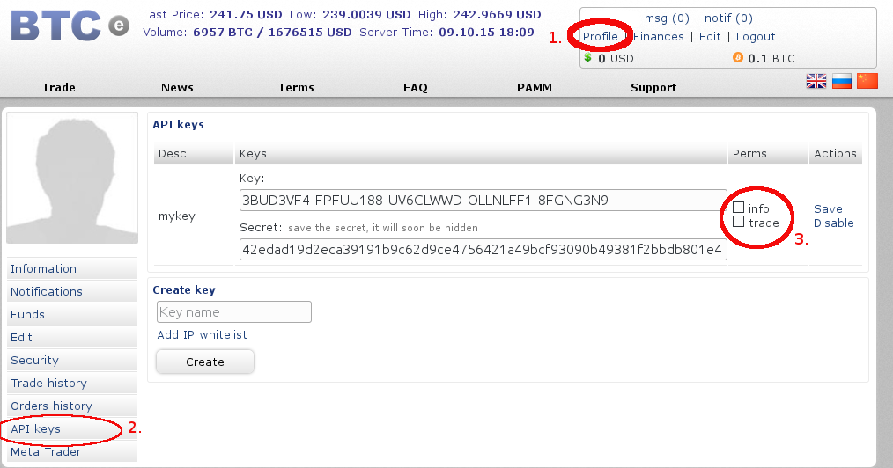

This tool should help you, to create a configuration file for the Tulip Trading Bot. The result will be a configuration in a JSON file that you can pass to the Bot by using: tulip-trading-bot -c "config Filename"
An instruction guide can be found below:
Before we start the configuration we need to create accounts for exchanges we want to trade on. Tulip currently supports the following exchanges: {{exchange}},
When you have created your account(s), it is time to get the API keys. On each website this can be found on a different place, but it usually looks like the picture below:
In the case of Btce you have to go to 1. profile 2. API keys 3. perms, It is important that you check both info and trade! if you forget this you won't be able to trade with our software.
On other sites you might find the API keys on a different place, but they are usually come in a pair in a similar format.
After we created the API keys for the respective exchanges, we are ready to start the configuration
The first step is to add the information(API keys from step 0) from our exchange(s) in the 'exchange' tab
.In this tab you have the possibility to add multiple exchanges
The next step is to select a bot/strategy. There are a lot of strategies to trade for a profit, we currently support two: Graph and EMA
Graph bot. This bot trades on all markets, on a single exchange using arbitrage based tactics. We've made ridiculous amounts of Bitcoins with this bot on Cryptsy and Bter in the first half of 2014, but we have yet to find settings that work now. We've never tried it on other exchanges. The profit of this bot depends a lot on how active the altcoin markets are.
Ema bot. This bot trades on one market on single exchange, but does so by inspecting trades on different exchanges via watchers. Depending on market conditions, it will either try to go all-in BTC or USD (that is if you are trading on BTC/USD). This bot has been outperforming 'randomized' trading strategies quite consistently with a profit between 5 and 10% per month.
Despite the name, the ema bot does not actually use classical ema, and does not have anything to do with ema crossover either. We run the ema bot on around 5 different exchanges to spread risks.
When you have made your choice you can add the bot(s) in the 'bot' tab.
Remember that it is possible to configure multiple bots! You can for example run an EMA bot on Itbit and another one on Btce, it is however not advisable to run multiple bots on the same exchange with the same account!
If you have selected the EMA bot there is the option to select watchers. Watchers depend on exchange but do not require API keys! So in order to use data from other exchanges you do not need an account. Simply add these exchanges in the 'exchange' tab with empty API keys.
When the configuration is finished you can download it from 'viewconfig' tab.
When you have followed all of the above steps it is time to start the bot. Copy the configuration to a location where the tulip-trading-bot software has access to and start it with tulip-trading-bot -c "configuration Filename"
Congratulations! the Tulip software will now start trading for you.